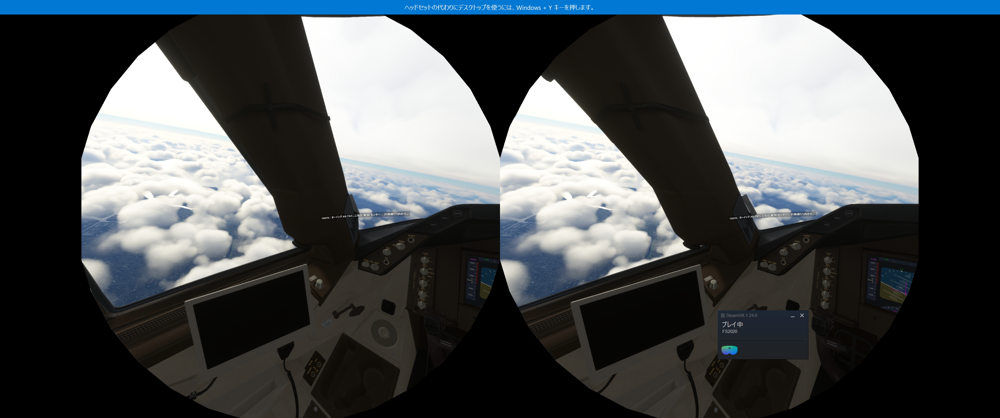
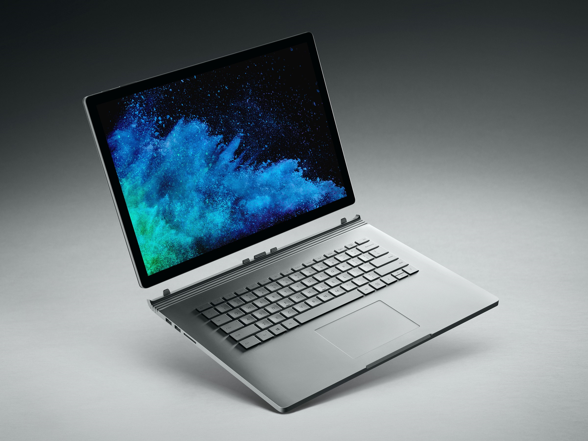
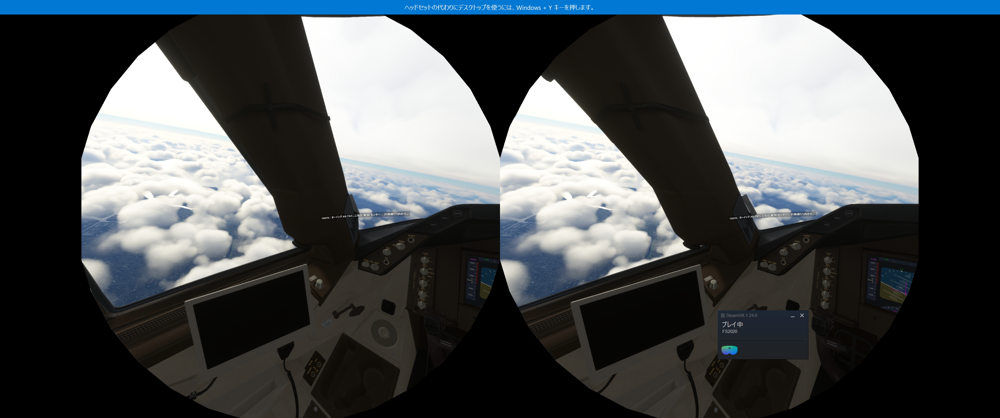

PC

6年くらい使っていたデスクトップPCが壊れました。起動時やスリープ復帰時にCドライブが認識されなくなって、Windows自体が使えなくなる不具合が頻発するのです。正常に起動するまで、お祈りしながら再起動を繰り返す必要があります。神様ビルゲイツ様どうかWindowsに力を…！🙏
正常に起動したらそのままスリープもシャットダウンもしなければ使用可能ですが、それは現実的ではありません。ちゃんと動くデスクトップPCが必要です。そんなこんなで自作PCを組みました。
しかしPCを組む直前に、RTX3060が39800円(税込)になるセールがありました。私は見送ろうかと思いましたが、周囲からｶｯﾁｬｲﾅｰと圧力を受けて購入してしまいました。
そんなこんなでできたPCがこちら

Official髭男dismの「ミックスナッツ」のジャケット画像を貼ってみました🥜 気になるスペックは下記の通りです。
さて、ここでもう一つのPCのお話です。私はデスクトップPCだけでなくラップトップPCも持っています。Surface Book 2という機種です。作業部屋ではデスクトップPCを、それ以外の場所ではSurface Book 2を使っていました。
デスクトップPCを組んで一件落着と思った矢先、恐れていた自体が起きました。Surface Book 2のバッテリーが急激に劣化しました。フル充電から2時間持ちません。バッテリー劣化度を確認すると脅威の89％でした。入手してから3年9ヶ月ずっと極端に酷使した事を考えると、仕方ないかなと思える範囲です。
バッテリー駆動はラップトップPCの必須条件だと思っています。常に充電器を挿さねばならないのは、もはやラップトップではなくコンパクトなデスクトップと呼んで良いと思います。逆説的に言えば、バッテリーが死んだだけでPCとしての機能は生きています。電源に繋ぎっぱなしで、何ならモニターなどを繋げば、デスクトップPCとしてある程度は活躍できるのではないでしょうか？
しかしながらデスクトップPCを組んだ後なんですよね。実質デスクトップPCが2台になってしまいました。どうしましょう？🤔
デスクトップPCとラップトップPCを両方得るなら、Surface Book 2をデスクトップのように運用して、新たにラップトップPCを買うべきでした。デスクトップを組むのにかなりお金を消耗したので、ラップトップPCを買うとしてもかなり妥協しなければなりません。戦況を読み違えたか…。
幸いにも極めてローコストでラップトップPCを使わせてもらえる事になりました。もちろん妥協した結果なので、特に特徴の無いとてもとても普通の機種です。それでもラップトップPC不在の状況を避けられただけマシかなと。
いずれにせよ実質デスクトップが2台あります。Surface Book 2をデスクトップにし、それと与えられたラップトップPCを使えば、自作デスクトップPCを組む必要は無かったような…という考えも浮かびます。しかしPCを組んだことはメリットもあります。RTX3060の存在です。
せっかくRTX3060を積んでいるのならとゲームを、それも知りうる限り最も重いゲームを動かしてみたいですね。Microsoft Flight SimulatorのVRモードを遊んでみました。

グラフィック設定はVRモード専用のデフォルト設定（ローエンドとミドルの中間？）にしました。設定にもよると思いますが、普通に遊べます。拍子抜けするくらい普通に。前のデスクトップPCだと離陸と同時にクラッシュ（航空機が墜落するのではなくゲームアプリ自体が落ちるという意味で）してしまって遊べなかったので、今のPCでも無理かなと思っていました。
Microsoft Flight SimulatorのVRモードが遊べるってだけで最高of最高です！RTX3060すごいですね。VRAMを12GBも積んでいるだけのことはあります。最高！
ゲーム用と作業用に分業するという案です。自作PCはリビングかゲーム部屋に置いてTVに繋ぎ、作業部屋にはSurface Book 2とそれをデスクトップ化するSurface Dockを置きます。こうすれば非VRのPCゲームをより大画面で楽しめます。
悪くないアイデアだと思いますが、実現には幾つか課題があります。あらゆる可能性を考慮しつつ、検討を重ねて参りたいと思います。
まずはスピーカー。今使っているラップトップPCのスピーカーはとても劣悪です。バリバリと耳障りな共振が発生し使い物になりません。SurfaceのスピーカーはラップトップPCやタブレットPCの中ではトップクラスの音質です。ラップトップPCのスピーカーはあまり頻繫に使ったりはしませんが、作業用BGMをかけたりちょっと動画を見たりする時に逐一ヘッドホンを繋ぐ手間が生じます。
次にスタイラスペン。よく手書きメモを取るのでペンはあると嬉しいです。使っていない液タブがあるのでそれで我慢します。
最後にタッチスクリーン。Xbox Cloud Gamingでは一部のゲームソフトがタッチ操作に対応しています。つまりタッチスクリーンがあるSurfaceなら、コントローラーを持ち歩かなくてもゲームを遊べます。今のラップトップPCはタッチ非搭載なのでコントローラーが必須です。しかし一般的なコントローラーって嵩張るんですよね。Joy-Conみたいなサイズ感で持ち歩けるコントローラーが欲しいです。気が向いたら電子工作で作ります。
こうして見ると、私の場合作業に専念するならごく普通のラップトップPCで事足りそうです。しかし欲張るとSurfaceの方が幸せになれますね。
何はともあれMicrosoft Flight SimulatorのVRモードが遊べるようになったのはとっても大きなメリットです。空を飛ぶ爽快感は何にも代えがたい素敵な体験です。飛びまくります！✈
ブログ5周年とPC周りの近況
みなさんお久しぶりです！ 元素さんです！
なんと本日、私のブログ歴が5年になりました🙌
長らく更新できなかったのですが、この大きな節目には何か書かなきゃ！と思い立ってお休みをとって記事を書きました。今回は近況報告を兼ねて、私が普段使用しているデバイス周りの変化について話したいと思います。
目次
ブログを更新できなかった要因
前回の更新は8月。3ヶ月経ってしまいましたね。本当は9月に記事を投稿する予定でした。投稿に合わせて毎日書いてたんです。しかし、8月末に悲劇が起きたんです。6年くらい使っていたデスクトップPCが壊れました。起動時やスリープ復帰時にCドライブが認識されなくなって、Windows自体が使えなくなる不具合が頻発するのです。正常に起動するまで、お祈りしながら再起動を繰り返す必要があります。神様ビルゲイツ様どうかWindowsに力を…！🙏
正常に起動したらそのままスリープもシャットダウンもしなければ使用可能ですが、それは現実的ではありません。ちゃんと動くデスクトップPCが必要です。そんなこんなで自作PCを組みました。
新しい？デスクトップPC
一から自作PCのパーツを全部揃えるのは、当然ながら高額です。しかし充分に貯金できるまで待てません。そんな時にタイミング良く、友人たちが中古でPCパーツを譲ってくれました。体のいい不用品処分ですが私にとっては渡りに船。CPUに内蔵グラフィックスがあるので、GPUが無くても軽作業には困りません。GPU無しのフルタワーは何だかちぐはぐな印象を受けますが、安く済ませたいと思っていました。しかしPCを組む直前に、RTX3060が39800円(税込)になるセールがありました。私は見送ろうかと思いましたが、周囲からｶｯﾁｬｲﾅｰと圧力を受けて購入してしまいました。
そんなこんなでできたPCがこちら
Official髭男dismの「ミックスナッツ」のジャケット画像を貼ってみました🥜 気になるスペックは下記の通りです。
| CPU | Core i7-7700 |
| RAM | 16GB |
| GPU | RTX3060 |
使ってみて感動したのは発熱が弱い事ですね。冷却を気にしてファンを6つ付けた事もあって、軽作業時のCPU温度は27℃と極めて低い数値を出しました。GPUも平時は30℃台で、ピーク時でも55℃を超えません。前のPCのGPUは平時で45℃、ピーク時で90℃と、暖房器具としての性能を遺憾なく発揮していました。最近は作業部屋にいても肌寒く感じます。
ラップトップPC
さて、ここでもう一つのPCのお話です。私はデスクトップPCだけでなくラップトップPCも持っています。Surface Book 2という機種です。作業部屋ではデスクトップPCを、それ以外の場所ではSurface Book 2を使っていました。
デスクトップPCを組んで一件落着と思った矢先、恐れていた自体が起きました。Surface Book 2のバッテリーが急激に劣化しました。フル充電から2時間持ちません。バッテリー劣化度を確認すると脅威の89％でした。入手してから3年9ヶ月ずっと極端に酷使した事を考えると、仕方ないかなと思える範囲です。
バッテリー駆動はラップトップPCの必須条件だと思っています。常に充電器を挿さねばならないのは、もはやラップトップではなくコンパクトなデスクトップと呼んで良いと思います。逆説的に言えば、バッテリーが死んだだけでPCとしての機能は生きています。電源に繋ぎっぱなしで、何ならモニターなどを繋げば、デスクトップPCとしてある程度は活躍できるのではないでしょうか？
しかしながらデスクトップPCを組んだ後なんですよね。実質デスクトップPCが2台になってしまいました。どうしましょう？🤔
結果論で言えば
デスクトップPCを新たに組んだという選択は、暗にSurface Book 2がこれからも使い続けられるという浅はかな考えに基づいています。私はデスクトップPCとラップトップPCの両方を必要とします。Surface Book 2がラップトップPCとして生き続けていれば妥当な判断でした。しかし現実は非情。Surface Book 2がラップトップPCとしての要件を失ってしまいました。デスクトップPCとラップトップPCを両方得るなら、Surface Book 2をデスクトップのように運用して、新たにラップトップPCを買うべきでした。デスクトップを組むのにかなりお金を消耗したので、ラップトップPCを買うとしてもかなり妥協しなければなりません。戦況を読み違えたか…。
幸いにも極めてローコストでラップトップPCを使わせてもらえる事になりました。もちろん妥協した結果なので、特に特徴の無いとてもとても普通の機種です。それでもラップトップPC不在の状況を避けられただけマシかなと。
いずれにせよ実質デスクトップが2台あります。Surface Book 2をデスクトップにし、それと与えられたラップトップPCを使えば、自作デスクトップPCを組む必要は無かったような…という考えも浮かびます。しかしPCを組んだことはメリットもあります。RTX3060の存在です。
ゲーム用途でのPC
PCの用途は作業だけではありません。性能が足りればゲームも出来ます。また、作業でも内容によっては高い処理性能が必要になるかもしれません。とにかく高性能は何かと役に立ちます。せっかくRTX3060を積んでいるのならとゲームを、それも知りうる限り最も重いゲームを動かしてみたいですね。Microsoft Flight SimulatorのVRモードを遊んでみました。

グラフィック設定はVRモード専用のデフォルト設定（ローエンドとミドルの中間？）にしました。設定にもよると思いますが、普通に遊べます。拍子抜けするくらい普通に。前のデスクトップPCだと離陸と同時にクラッシュ（航空機が墜落するのではなくゲームアプリ自体が落ちるという意味で）してしまって遊べなかったので、今のPCでも無理かなと思っていました。
Microsoft Flight SimulatorのVRモードが遊べるってだけで最高of最高です！RTX3060すごいですね。VRAMを12GBも積んでいるだけのことはあります。最高！
デスクトップPC二刀流
VRゲームを遊べるからPCを組んで良かったと言いつつも、デスクトップPCが2台あって持て余している事は変わりません。そこで2台とも有効活用するプランを考えました。ゲーム用と作業用に分業するという案です。自作PCはリビングかゲーム部屋に置いてTVに繋ぎ、作業部屋にはSurface Book 2とそれをデスクトップ化するSurface Dockを置きます。こうすれば非VRのPCゲームをより大画面で楽しめます。
悪くないアイデアだと思いますが、実現には幾つか課題があります。あらゆる可能性を考慮しつつ、検討を重ねて参りたいと思います。
やっぱりSurfaceが恋しくなる
ごく普通のラップトップPCを使ってみて、意外と悪くないなと思っています。処理性能もCore i5とRAM8GBで充分。画面も13インチで事足ります。普段の軽作業なら困りません。しかしやっぱりSurfaceが欲しいと思う点が3つあります。まずはスピーカー。今使っているラップトップPCのスピーカーはとても劣悪です。バリバリと耳障りな共振が発生し使い物になりません。SurfaceのスピーカーはラップトップPCやタブレットPCの中ではトップクラスの音質です。ラップトップPCのスピーカーはあまり頻繫に使ったりはしませんが、作業用BGMをかけたりちょっと動画を見たりする時に逐一ヘッドホンを繋ぐ手間が生じます。
次にスタイラスペン。よく手書きメモを取るのでペンはあると嬉しいです。使っていない液タブがあるのでそれで我慢します。
最後にタッチスクリーン。Xbox Cloud Gamingでは一部のゲームソフトがタッチ操作に対応しています。つまりタッチスクリーンがあるSurfaceなら、コントローラーを持ち歩かなくてもゲームを遊べます。今のラップトップPCはタッチ非搭載なのでコントローラーが必須です。しかし一般的なコントローラーって嵩張るんですよね。Joy-Conみたいなサイズ感で持ち歩けるコントローラーが欲しいです。気が向いたら電子工作で作ります。
こうして見ると、私の場合作業に専念するならごく普通のラップトップPCで事足りそうです。しかし欲張るとSurfaceの方が幸せになれますね。
あとがき
そんなこんなで近況報告を書くつもりがPC関係の報告になってしまいました。ブログもそうですけど軽作業ばかりやっていると、自作PCを組まずにSurface Book 2をデスクトップ運用すれば良かったんじゃないかと疑念を抱きます。既に買った物は戻せませんし、使わなきゃもったいないので、これからはRTX3060を積極的に活用し疑念を払拭したいと思います。何はともあれMicrosoft Flight SimulatorのVRモードが遊べるようになったのはとっても大きなメリットです。空を飛ぶ爽快感は何にも代えがたい素敵な体験です。飛びまくります！✈